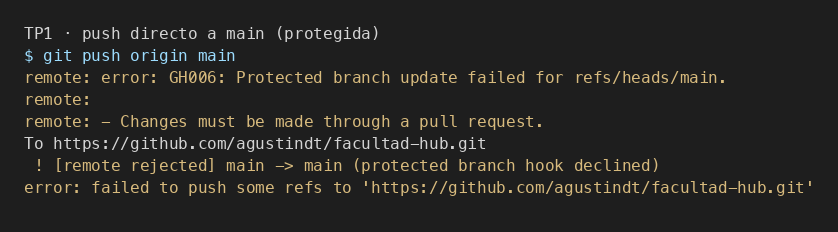

Respuesta en dos partes: dónde está, qué hace
Si pregunta “¿dónde está la imagen?” no expliques Docker. Abrí ghcr o la columna IMAGE. Si pregunta “¿qué hace el pipeline?” abrí ci.yml y señalá los dos docker/build-push-action.
Tecla D salta a estas tres diapos. Después sigue el guion de la mesa (push, compose, Project, PR #13).
Regla
- Dónde = ruta, URL o columna. El dedo en la pantalla.
- Qué hace = una frase. Si te va la segunda, parás.
- Si no arranca, la captura de evidencias es el plan B.
¿Dónde está la imagen? ¿Qué es? ¿Dónde corre?
| Pregunta | Señalá | Qué hace (una frase) |
|---|---|---|
| ¿Dónde está la imagen? | ghcr.io/agustindt/facultad-hub-backend:v0.1.0 y …-frontend:v0.1.0 En la mesa: columna IMAGE de compose -f docker-compose.registry.yml ps |
Es la receta inmutable (el paquete). No es un proceso. Cualquiera hace pull anónimo porque es pública. |
| ¿Dónde se define? | backend/Dockerfile · frontend/Dockerfile | Multi-stage: etapa 1 instala, etapa 2 copia runtime a alpine. La final no lleva npm. node:22 = 1.63 GB, backend final = 230 MB. |
| ¿Dónde corre? | El contenedor · docker compose ps |
Proceso de esa imagen. Borrar el contenedor no borra la imagen ni el volumen. |
| ¿Dónde están los datos? | Volumen datos-db → /var/lib/postgresql/data |
down lo deja. down -v lo borra. No está dentro de la imagen. |
| ¿Dónde están las notas? | Bind mount VAULT_PATH → /vault |
En el disco, no en Postgres. Obsidian las abre. |
| ¿Cómo se encuentran? | DATABASE_URL=…@db:5432/… · nginx → backend:4177 |
db y backend son DNS de compose, no localhost. El browser llama a /api (mismo origen). |
| ¿Dónde está el .env? | No en el repo. .gitignore · sí: .env.example | Password y ruta del vault. En el pipeline van a secrets. |
¿Dónde está el pipeline? ¿Qué hace? ¿Dónde queda lo que produce?
| Pregunta | Señalá | Qué hace (una frase) |
|---|---|---|
| ¿Dónde está el pipeline? | .github/workflows/ci.yml Las corridas: pestaña Actions |
Pipeline as code: vive en el repo, entra por PR. Actions es el historial, no la definición. |
| ¿Qué hace? | Dos jobs en paralelo: build-backend y build-frontend |
Buildea con los Dockerfiles del TP2. No corre tests (TP5). No pushea a ghcr: push: false. |
| ¿Dónde corre? | runs-on: ubuntu-latest — una VM limpia por job |
No comparten disco ni capas. Cada uno hace su checkout y su cache (scope=backend / frontend). |
| ¿Qué produce? ¿Dónde queda? | Tags backend:ci / frontend:ci en el runner |
Se tiran al terminar el job. Verifica, no entrega. La imagen que se usa está en ghcr (TP2). |
| ¿Dónde está el cache? | cache-from/to: type=gha — cache de Actions, no un archivo del repo |
Si desaparece, tarda más y sigue verde. |
| ¿Dónde está el gate? | Settings → Branches → main · se ve en el PR: merge BLOCKED | Exige los dos checks verdes. strict: true: la rama tiene que estar al día con main. |
| ¿Dónde está el badge? | Primera línea del README | Muestra la última corrida de push a main, no la del PR. |
¿Dónde está la protección, el conflicto, el plan?
| Pregunta | Señalá | Qué hace (una frase) |
|---|---|---|
| ¿Dónde está la protección? | Repo → Settings → Branches → rule de main |
PR obligatorio, 0 approvals, enforce_admins. Lo demostrás: git push origin main → GH006. |
| ¿Dónde está el conflicto? | PR #2 · README misma línea | Dos ramas nacidas de main. Git no elige contenido. Quedó versión B. |
| ¿Dónde está la versión? | Release v1.0.0 · también v2, v3, v4 | El tag apunta a un commit. Congela ese TP. |
| ¿Dónde está el plan? | github.com/users/agustindt/projects/5 — no la URL del repo | Épica #4 → historia #5 → tarea #6 cerrada por PR #10. Bug #8 al costado. |
| ¿Dónde está el 502 / nginx? | frontend/nginx.conf · resolver 127.0.0.11 |
Si el nombre va escrito en proxy_pass, nginx resuelve al arrancar y se queda con la IP vieja. |
Push a main — tiene que fallar
Hacé
echo "prueba-defensa" >> README.md git add README.md git commit -m "prueba" git push origin main # GH006 git reset --hard HEAD~1
Decí
Main protegida con enforce_admins: ni el dueño pushea. Todo entra por PR.

El compose que baja, no el que buildea
Hacé
docker compose -f docker-compose.registry.yml ps git ls-files .env docker volume ls
Decí
Las bajé de ghcr, no las construí acá. El secreto no viaja. datos-db sobrevive a down; down -v lo borra. Las notas son bind mount.

#6 Done → PR #10 → #5 → #4
Decí
Closes #6 cerró la tarea al mergear. La historia sigue abierta: tests y artefacto son TP5. El bug #8 está al costado: defecto de algo ya entregado.
PR #13: rojo → BLOCKED → fix → verde
Decí
Dos jobs en paralelo, sin needs. Construyen los Dockerfiles del TP2, no un npm aparte. Rompí el build con un paquete que no existe porque este stack no compila: un import inventado no cae en docker build.
Tu caso
| Si pregunta | Contestás |
|---|---|
| Cuatro TPs el 28/8 | La app ya existía. Ese día armé el proceso. No fabriqué historial. |
| ¿Por qué esta app? | Es más grande que el CRUD. La defensa es 50% y esta app la uso. |
| El 502 | nginx cacheó la IP. resolver 127.0.0.11 + proxy_pass por variable. Bug #8. |
| ¿IA? | Cursor armó YAML y Dockerfiles. Yo verifiqué GH006, persistencia, #13 BLOCKED. No delegué versión B, 0 approvals, notas fuera de PG, 7 días, WIP 2, nombres de los jobs. |